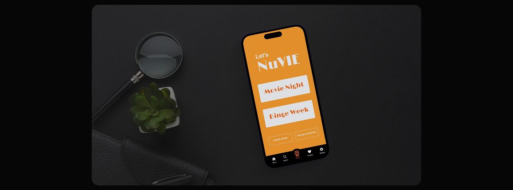
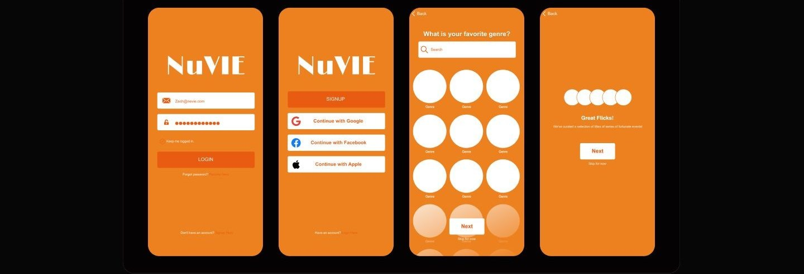
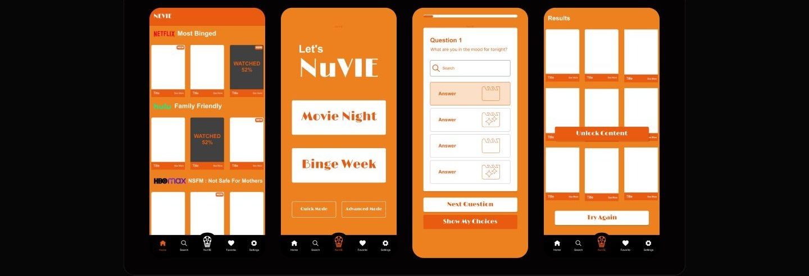
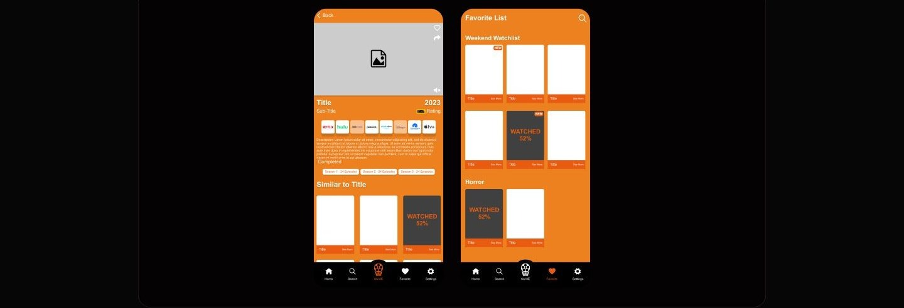
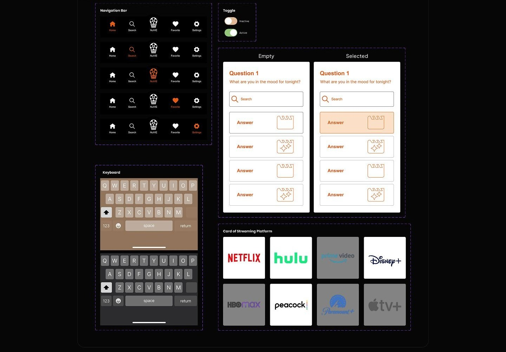

Case study 10 of 11 · Mobile app · Independent concept project
NuVIE
A watch-tracking app built around deciding what to watch next.
2 min read

Turning an open-ended catalog into a short guided path, so a person with decision fatigue lands on one confident pick instead of endless scrolling.
How the mood questionnaire, mode picker, and folder-based watchlists all push toward the same goal: fewer options on screen at any moment.
The problem is not finding movies. It is choosing one.
Tracking apps tell you where a title streams, but none of them help you decide what to actually watch tonight. A review of Reelgood, JustWatch, Trakt, and IMDb-style recommendation feeds showed the same pattern: passive lists, generic suggestions, and walls of options that make the choice harder. NuVIE reframes the tracker as a decision tool, pairing watchlists and streaming availability with a short mood-based questionnaire.
- Recommendations are trend-driven rather than mood-driven, so they feel generic and impersonal.
- Availability tools answer where to watch but leave the harder what-to-watch question open.
- Oversized catalogs and cluttered layouts overwhelm exactly the users who want a quick answer.
A competitor teardown of IMDb, JustWatch, Reelgood, and Trakt compared watchlist handling, streaming info, and recommendation style to locate the gap NuVIE fills.
A guided path from mood to one good pick
Every screen narrows the decision: pick a mode, answer a few playful questions, get a short list, then track what you saved and watched.




What testing could and could not tell me
Scenario-based sessions checked whether the recommendation flow, streaming links, and favorite folders were discoverable and intuitive; as a concept prototype, they could not measure whether guided picks beat browsing over real weeks of use.
As a concept project, testing was moderated task walkthroughs, not longitudinal use.
Appendix: foundations and system
Selected system artifacts behind the screens. The component sheet shows the questionnaire and navigation states that carry the guided flow.
